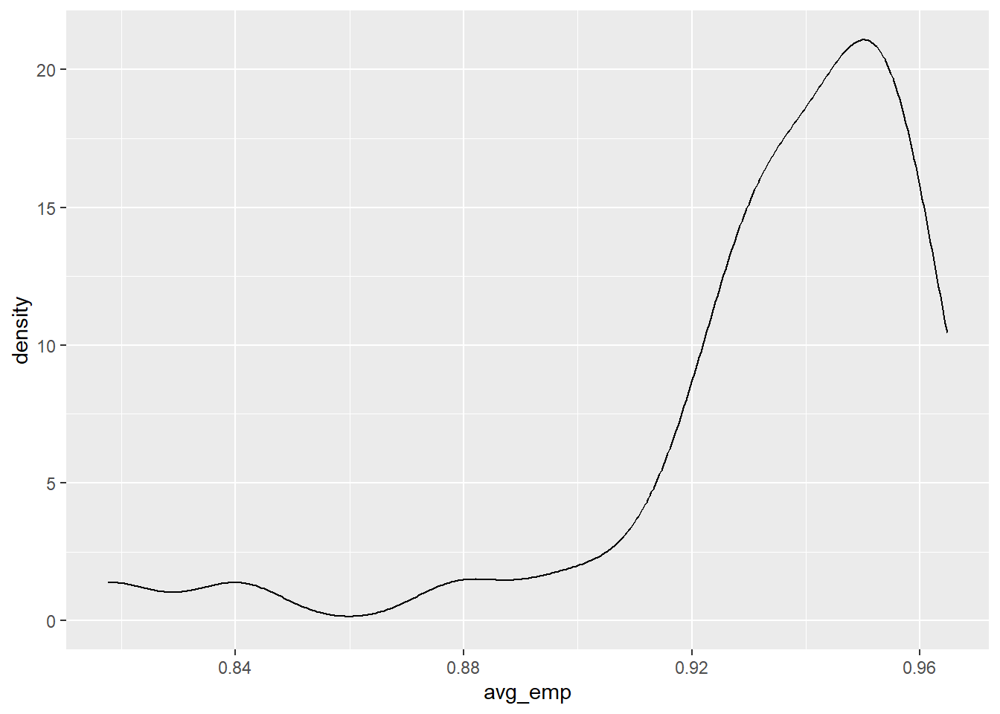
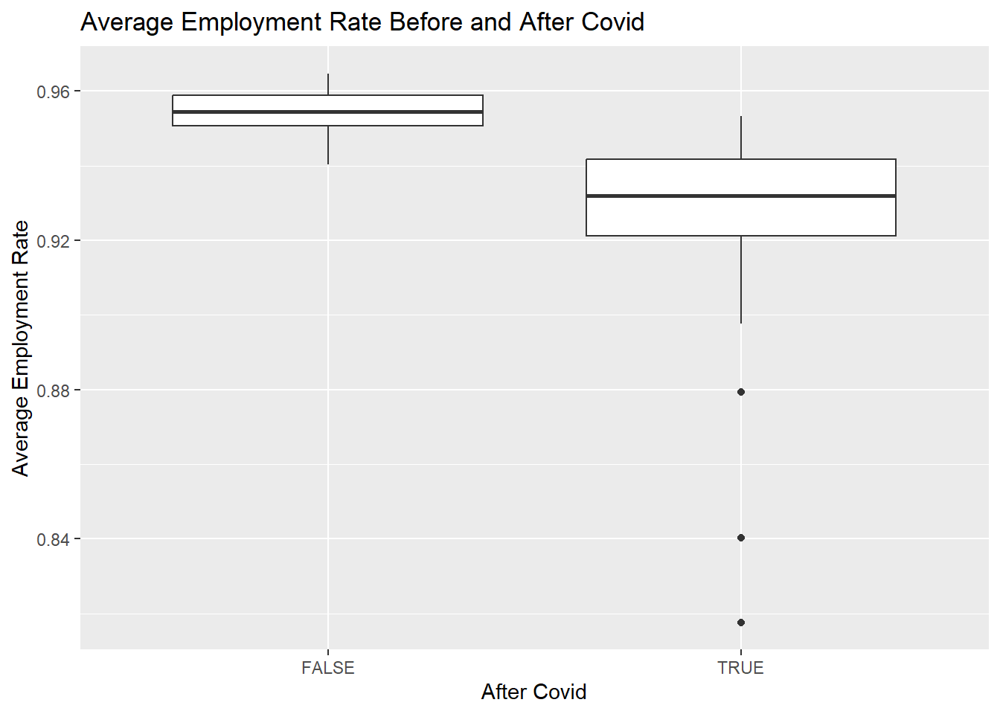
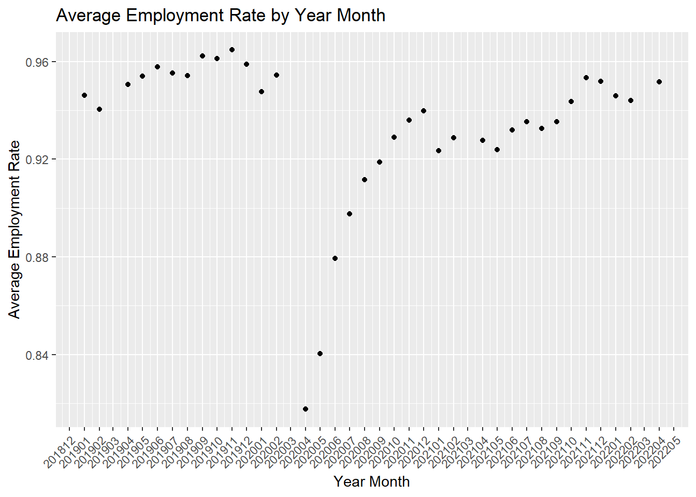
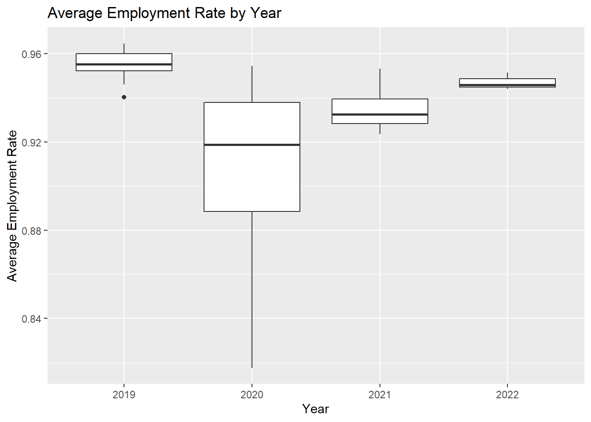
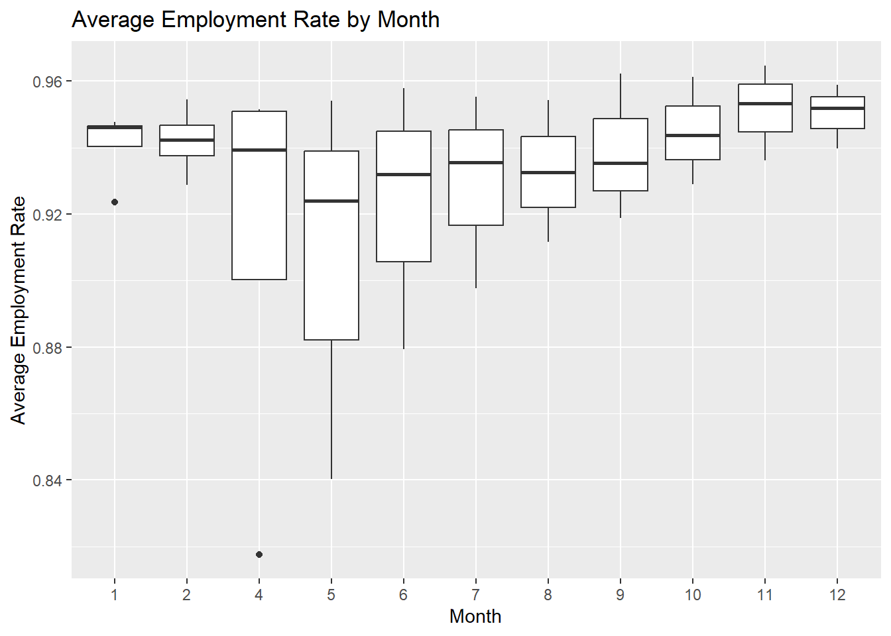
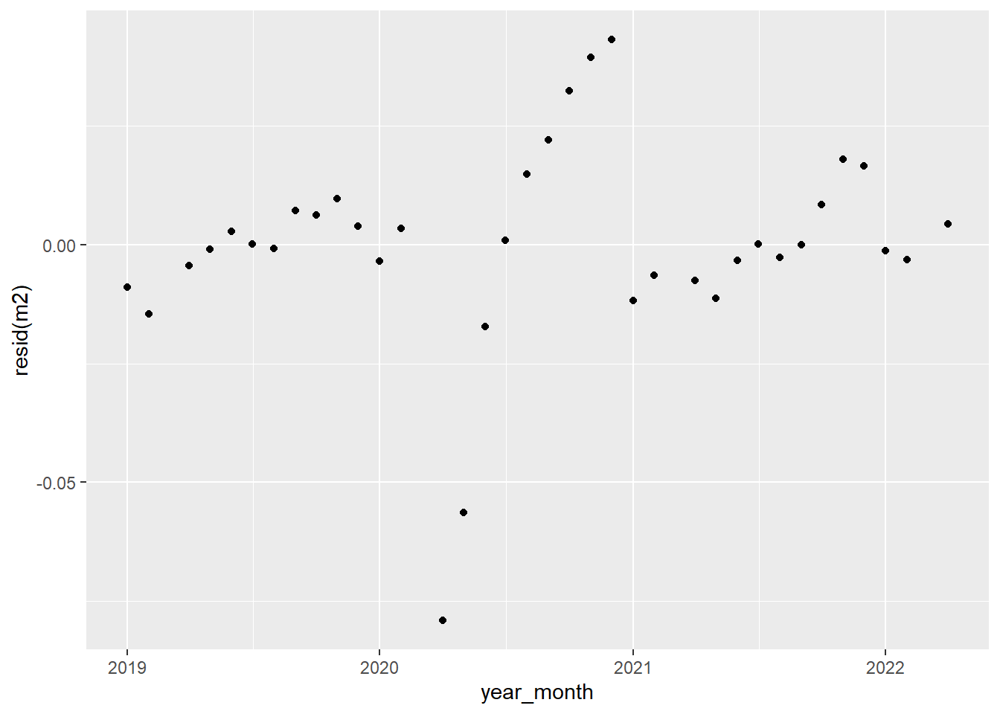
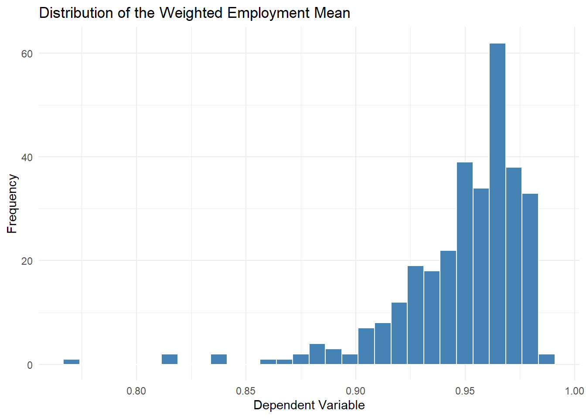

# import libraries
library(tidyverse)
library(rio)
library(vtable)
library(fixest)
library(ipumsr)
library(lubridate)
library(stringr)
library(lmtest)
library(olsrr)
library(lmtest)
library(car)OMSBA5300 Final DTC - Group 5
Load the data from the IPUMS website and the industry code file
# import data
ddi <- read_ipums_ddi("../data/cps_00002.xml")
data <- read_ipums_micro(ddi)
ind_name <- import('../data/indnames.csv')Data Cleaning In General
Aggregate employment variable at industry_year_month level after filtering out people not in labor force and people in armed force, as well as those younger than 18 or older than 62. The reason these records are filtered out is that we want to see the change in employment status, and people not in labor force, in armed force, or not eligible for employment in age won’t have employment status change. Therefore, they don’t need to be included in the data set.
We were not able to pull selected year and month data, because it still gave us the entire time range data after select and download, so we need to manually filter out those before 2019 and after April 2022.
Employment Status & Labor Status Filter
Given the focus of the analysis on assessing the average year_month employment status change, we want to refine the data set to include only individuals actively participating in the labor force. Removing individuals who are not actively participating in the labor force helps reduce the data set’s size and increases the validity of the analysis to capture the actual employment trends. To achieve this, the distribution of EMPSTAT and LABFORCE was checked to determine which one to use as a filter to keep only employment and unemployment related records.
# check labels
labeltable(data$EMPSTAT)| EMPSTAT | Label |
|---|---|
| 0 | NIU |
| 1 | Armed Forces |
| 10 | At work |
| 12 | Has job, not at work last week |
| 21 | Unemployed, experienced worker |
| 22 | Unemployed, new worker |
| 32 | NILF, unable to work |
| 34 | NILF, other |
| 36 | NILF, retired |
| 20 [NOT IN DATA] | Unemployed |
| 30 [NOT IN DATA] | Not in labor force |
| 31 [NOT IN DATA] | NILF, housework |
| 33 [NOT IN DATA] | NILF, school |
| 35 [NOT IN DATA] | NILF, unpaid, lt 15 hours |
labeltable(data$LABFORCE)| LABFORCE | Label |
|---|---|
| 0 | NIU |
| 1 | No, not in the labor force |
| 2 | Yes, in the labor force |
# check distribution of each status
table(data$EMPSTAT)
0 1 10 12 21 22 32 34 36
1398569 24263 3194849 122045 179218 14135 290354 852041 1089480 table(data$LABFORCE)
0 1 2
1422832 2231875 3510247 0 - NIU (Not in Universe) and 1 - Armed Forces together in employment status equals to 0 - NIU in labor force variable. And 32 - NILF Unable to work, 34 - NILF other, and 36 - NILF retired together in employment status equals to 1 - No not in labor force in labor force variable. And 10 - At work, 12 - Has job not at work last week, 21 - unemployed experienced worker, and 22 - unemployed new worker together equals 2 - Yes in labor force in labor force variable. Therefore, we can safely filter out those not in labor force by only keeping those with value 2 in labor force variable.
Age Filter
# check age
summary(data$AGE) Min. 1st Qu. Median Mean 3rd Qu. Max.
0.00 18.00 39.00 39.12 58.00 85.00 After checking the age distribution, we decided to filter and keep only 18 to 62 years old so those that are not work age won’t dilute our dependent variable.
Time Frame Filter
As the focus of the analysis lies in evaluating the trend just before the start of the pandemic and during the pandemic, the data set was limited to only include January 2019 - April 2022.
Q1: How has COVID affected the health of the retail industry, as measured by employment?
Variables of Interest:
Dependent Variable: average employment rate per month in the retails industry.
Independent Variables: binary variable After_covid, and categorical variable year, categorical variable month.
# select variables needed for question 1 and pre-process data
df1 <- data %>%
filter(AGE >= 18 & AGE <= 62) %>%
select(YEAR, MONTH, WTFINL, EMPSTAT, LABFORCE, IND) %>%
filter(LABFORCE == 2) %>%
mutate(year_month = paste(YEAR, sprintf('%02d', MONTH), sep='-')) %>%
filter(year_month >= '2019-01' & year_month <= '2022-04') %>%
filter(year_month != '2020-03') %>%
select(-LABFORCE) %>%
mutate(employed = EMPSTAT %in% c(10, 12)) %>%
rename_all(tolower) %>%
left_join(ind_name, by='ind') %>%
filter(indname == 'Retail Trade') %>%
group_by(year, month) %>%
summarize(avg_emp = weighted.mean(employed, wtfinl, na.rm = TRUE)) %>%
mutate(after_covid = paste(year, sprintf('%02d', month), sep='-') >= '2020-04') %>%
drop_na(avg_emp) %>%
mutate(year_month = as.Date(paste(year, month, '01', sep = '-')))
#vtable(df1)In the dataset used for answering question 1, March 2020 was dropped due to the March data for other years are null, hence no data to compare to March 2020 data, and we cannot really distinguish whether the effect of Covid really started to kick in in March 2020.
EDA
Before deciding on which variable to include in the regressions, EDA was conducted to check the distributions of the dependent variable on its own and distributions of dependent variable for different independent variables.
# check distribution of avg_emp
ggplot(df1, aes(avg_emp)) +
geom_density()
summary(df1$avg_emp) Min. 1st Qu. Median Mean 3rd Qu. Max.
0.8176 0.9286 0.9421 0.9336 0.9535 0.9647 Average employment rate was mostly between 0.93 and 0.95, with mean of 0.93.
# compare the avg_emp between before and after covid
ggplot(data=df1, aes(x=after_covid, y=avg_emp)) +
geom_boxplot() +
xlab('After Covid') +
ylab('Average Employment Rate') +
ggtitle('Average Employment Rate Before and After Covid ')
The average employment rate is very different before and after covid.
Next we checked how average employment rate changes at the year-month level.
ggplot(df1, aes(x=year_month, y=avg_emp)) +
geom_point() +
scale_x_date(date_labels = "%Y%m", date_breaks = "1 month") +
xlab('Year Month') +
ylab('Average Employment Rate') +
ggtitle('Average Employment Rate by Year Month') +
theme(axis.text.x = element_text(angle = 45, hjust = 1))
From plot we can see that average employment rate had a sharp drop in April 2020, and slowly climbed up in the rest of the months in 2020.
# check distribution of avg_emp by year or month
ggplot(df1, aes(x=factor(year), y=avg_emp)) +
geom_boxplot() +
xlab('Year') +
ylab('Average Employment Rate') +
ggtitle('Average Employment Rate by Year')
The plot shows that the mean of average employment rate per year varied from year to year, mostly had a narrow spread, but had an unusally wide spread in year 2020, which is when the Covid-19 pandemic began. Therefore, year can be a good option to use as control variable.
Next the distribution of average employment rate in each month was checked.
ggplot(df1, aes(x=factor(month), y=avg_emp)) +
geom_boxplot() +
xlab('Month') +
ylab('Average Employment Rate') +
ggtitle('Average Employment Rate by Month')
The mean of avg_emp doesn’t seem to vary a lot by month, with some data points for month of April, May, June, and July having the largest variance. Based on the Average Employment Rate by Year Month plot, these ones are very likely the immediate months in 2020 after Covid-19. So if Covid-19 didn’t happen the average employment rate doesn’t vary much from month to month. Therefore, month is not necessary to be used as a control variable.
Regressions
The average employment rate of retail industry over time is not panel data, therefore, we cannot use fixed effects research design to control for any variables that we don’t know of that have causal effects on average employment rates. However, we can control for years to take out the effect of year on average employment rate from error terms and check on the changes of the effect of Covid-19 from year to year. We know that we are leaving out some variables in the error term, But since we are only concerned about how Covid-19 impact the retail industry in term of employment and how this impact change over time, we are okay with omitted variable bias.
We first regressed Average Employment Rate per year-month on a binary variable after_covid, then we added year as a categorical variable in our second model.
# use average employment rate on after_covid
m1 <- feols(avg_emp ~ after_covid, data=df1)
# add year as a categorical control
m2 <- feols(avg_emp ~ after_covid + factor(year), data=df1, vcov=~factor(year))
etable(m1, m2,se='hetero') m1 m2
Dependent Var.: avg_emp avg_emp
Constant 0.9545*** (0.0019) 0.9551*** (0.0022)
after_covidTRUE -0.0327*** (0.0074) -0.0544*** (0.0148)
factor(year)2020 -0.0040 (0.0034)
factor(year)2021 0.0346* (0.0153)
factor(year)2022 0.0465** (0.0151)
________________ ___________________ ___________________
S.E. type Heteroskedast.-rob. Heteroskedast.-rob.
Observations 36 36
R2 0.25361 0.52885
Adj. R2 0.23165 0.46806
---
Signif. codes: 0 '***' 0.001 '**' 0.01 '*' 0.05 '.' 0.1 ' ' 1Because there is collinearity between our binary variable after_covid and categorical variable year, we didn’t do a regression with an interaction term between these two.
From the statistical summary, we can see that with model 1, before Covid-19, the mean of the average employment rate per month in retail industry is 0.9545, while after Covid-19, the mean of the average employment rate per month is estimated to decrease by 3.27 percentage points. And this effect is highly statistically significant even at at least 99.9% level. With model 2, before Covid-19, the mean of average employment rate per month is estimated to be 0.9551. After Covid-19 and compared to year 2019, in year 2020 the mean of average employment rate is estimated to decrease by 5.84 percentage points; after Covid-19 and compared to year 2019, in year 2021, the mean of average employment rate is estimated to decrease by 1.98 percentage points, and this is statistically significant at 99% confidence level; after Covid-19 and compared to year 2019, in year 2022, the mean of average employment rate is estimated to decrease by 0.79 percentage points, and this is statistically significant at 99.9% confidence level. These results align with the actual data.
# check for heteroskedasticity in m2
ggplot(data=df1, aes(x=year_month, y=resid(m2))) +
geom_point()
The residuals plot shows that there is some heteroskedasticity, therefore, it is necessary to use heteroskedasticity robust standard errors in the above etable() when generating the statistical summary.
Statistics Testing
Finally, we ran an F testing to see if the coefficients of years is jointly zero, because in model 2, the coefficient of year 2020 is not statistically significant.
wald(m2, 'year')Wald test, H0: joint nullity of factor(year)2020, factor(year)2021 and factor(year)2022
stat = 5.406e+27, p-value < 2.2e-16, on 3 and 31 DoF, VCOV: Clustered (factor(year)).The p-value is smaller than 0.01, therefore, we are able to reject the null hypothesis at at least 99% confidence level. We do need to include year as a categorical control in the regression.
Conclusion
Covid-19 has statistically significant impact on Retail Industry in terms of employment. The average employment rate in Retail industry dropped by 5.84 percentage point in the first year following Covid-19 outbreak. Even though in year 2021 and 2022, average employment rate in Retail industry started to pick up slowly, the average employment rate in 2022 still didn’t recover to that of 2019, which is the year before the Covid-19 outbreak.
Q2: How has retail fared relative to other industries?
As the first question has discovered the effect of the COVID-19 pandemic on the health of the retail industry measured by employment, our subsequent analysis will delve deeper into understanding how the retail industry performed in comparison to other industries by examining the employment data.
In this analysis, employment data will serve as a critical indicator of the health of various industries. A higher proportion of the population in a particular industry’s labor force implies that the industry requires additional manpower to meet its demands. A series of regression models will be conducted to see whether the relative amount of employment percentage in retail during the COVID had a more significant impact compared to other industries.
Dependent Variable: Average number of people per month in various industries with employment status as employed
Independent Variable: Categorical Industry Variables, Binary Covid_19 variable
Data Cleaning & Data Preparation
Industries
A comprehensive range of industry employment data was available within the data set for analysis was imported. Binary dummy variables were created for all industries.
data_1 <- merge(data, ind_name, by.x = "IND", by.y = "ind", all.x = TRUE)
labeltable(data_1$indname)| indname | Label |
|---|---|
| Agriculture, Forestry, Fishing, and Hunting, and Mining | Agriculture, Forestry, Fishing, and Hunting, and Mining |
| Arts, Entertainment, and Recreation, and Accommodation and Food Services | Arts, Entertainment, and Recreation, and Accommodation and Food Services |
| Construction | Construction |
| Educational Services, and Health Care and Social Assistance | Educational Services, and Health Care and Social Assistance |
| Finance and Insurance, and Real Estate and Rental and Leasing | Finance and Insurance, and Real Estate and Rental and Leasing |
| Information | Information |
| Manufacturing | Manufacturing |
| Military | Military |
| Other Services, Except Public Administration | Other Services, Except Public Administration |
| Professional, Scientific, and Management, and Administrative and Waste Management Services | Professional, Scientific, and Management, and Administrative and Waste Management Services |
| Public Administration | Public Administration |
| Retail Trade | Retail Trade |
| Transportation and Warehousing, and Utilities | Transportation and Warehousing, and Utilities |
| Wholesale Trade | Wholesale Trade |
data_1 <- data_1[!is.na(data_1$indname), ]
# Industry dummies - No dummy created for Retail (reference group)
data_1$agric <- ifelse(data_1$indname == "Agriculture, Forestry, Fishing, and Hunting, and Mining", 1, 0)
data_1$trans <- ifelse(data_1$indname == "Transportation and Warehousing, and Utilities", 1, 0)
data_1$constr <- ifelse(data_1$indname == "Construction", 1, 0)
data_1$manuf <- ifelse(data_1$indname == "Manufacturing", 1, 0)
data_1$whole <- ifelse(data_1$indname == "Wholesale Trade", 1, 0)
data_1$info <- ifelse(data_1$indname == "Information", 1, 0)
data_1$finance <- ifelse(data_1$indname == "Finance and Insurance, and Real Estate and Rental and Leasing", 1, 0)
data_1$prof <- ifelse(data_1$indname == "Professional, Scientific, and Management, and Administrative and Waste Management Services", 1, 0)
data_1$educ <- ifelse(data_1$indname == "Educational Services, and Health Care and Social Assistance", 1, 0)
data_1$arts <- ifelse(data_1$indname == "Arts, Entertainment, and Recreation, and Accommodation and Food Services", 1, 0)
data_1$other <- ifelse(data_1$indname == "Other Services, Except Public Administration", 1, 0)
data_1$pub <- ifelse(data_1$indname == "Public Administration", 1, 0)
data_1$military <- ifelse(data_1$indname == "Military", 1, 0)
data_1$retail <- ifelse(data_1$indname == "Retail Trade", 1, 0)Regressions Set Up
Creating Year,Month,Industry Aggregate utilized for Regression
Data has been pre-processed with Year, Month, and Industry aggregates on the year-month average of employment status within various industries. The weighted mean was calculated to factor in the predetermined weight to carry out a regression that depicts closer to the entire population. In addition, any industry that has less than 1000 people in the labor force for a month will be removed to focus only on sizable comparable industries.
year_month_labor3 <- data_1 %>%
mutate(year_month = paste(YEAR, sprintf('%02d', MONTH), sep='-')) %>%
filter(year_month >= '2019-01' & year_month <= '2022-04') %>%
filter(year_month != '2020-03') %>%
filter(AGE >= 18 & AGE <= 62) %>%
filter(LABFORCE == 2) %>%
mutate(employed = ifelse(EMPSTAT %in% c(10, 12), 1, 0)) %>%
filter(!is.na(WTFINL), !is.na(employed)) %>%
group_by(YEAR, MONTH, year_month, indname) %>%
summarize(count = n(),
sum_employee = sum(employed),
weighted_mean = weighted.mean(employed, WTFINL, na.rm = TRUE)) %>%
filter(count >= 1000) %>%
ungroup() %>%
mutate(
retail = ifelse(indname == 'Retail Trade', 1, 0),
after_covid = ifelse(paste(YEAR, sprintf('%02d', MONTH), sep='-') >= '2020-04', 1, 0)
) %>%
filter(indname %in% c("Retail Trade",
"Transportation and Warehousing, and Utilities",
"Manufacturing",
"Finance and Insurance, and Real Estate and Rental and Leasing",
"Educational Services, and Health Care and Social Assistance",
"Construction",
"Professional, Scientific, and Management, and Administrative and Waste Management Services",
"Other Services, Except Public Administration"))
m_retail <- feols(weighted_mean ~ retail, data = year_month_labor3)
summary(m_retail)OLS estimation, Dep. Var.: weighted_mean
Observations: 312
Standard-errors: IID
Estimate Std. Error t value Pr(>|t|)
(Intercept) 0.951111 0.001756 541.7304 < 2.2e-16 ***
retail -0.016930 0.004966 -3.4093 0.00073746 ***
---
Signif. codes: 0 '***' 0.001 '**' 0.01 '*' 0.05 '.' 0.1 ' ' 1
RMSE: 0.028916 Adj. R2: 0.03303etable(m_retail) m_retail
Dependent Var.: weighted_mean
Constant 0.9511*** (0.0018)
retail -0.0169*** (0.0050)
_______________ ___________________
S.E. type IID
Observations 312
R2 0.03614
Adj. R2 0.03303
---
Signif. codes: 0 '***' 0.001 '**' 0.01 '*' 0.05 '.' 0.1 ' ' 1Based on the provided regression model, the retail industry is statistically significant at the 0.001 level. The weighted employment average for the retail industry is 0.0169 units lower than the weighted employment average for non-retail industries, holding all other factors constant. This model does not specifically evaluate the effect of the COVID-19 pandemic but just for the duration of the data set.
In the next regression model, the independent variable after_covid dummy variable was included to specifically address the statistical impact of weighted employment status during the pandemic months. The weighted employment status was 0.0273 units lower during the COVID-19 pandemic period compared to the non-pandemic months after controlling for the effect of the retail industry. The coefficient for retail did not change in the two models below, suggesting that the retail industry had a lower weighted employment average compared to other industries, regardless of the pandemic. This specifically measured how retail fared relative to other industries during the pandemic.
m_retail <- feols(weighted_mean ~ retail, data = year_month_labor3)
m_retail1 <- feols(weighted_mean ~ retail + after_covid , data = year_month_labor3)
summary(m_retail)OLS estimation, Dep. Var.: weighted_mean
Observations: 312
Standard-errors: IID
Estimate Std. Error t value Pr(>|t|)
(Intercept) 0.951111 0.001756 541.7304 < 2.2e-16 ***
retail -0.016930 0.004966 -3.4093 0.00073746 ***
---
Signif. codes: 0 '***' 0.001 '**' 0.01 '*' 0.05 '.' 0.1 ' ' 1
RMSE: 0.028916 Adj. R2: 0.03303etable(m_retail,m_retail1) m_retail m_retail1
Dependent Var.: weighted_mean weighted_mean
Constant 0.9511*** (0.0018) 0.9686*** (0.0025)
retail -0.0169*** (0.0050) -0.0169*** (0.0044)
after_covid -0.0273*** (0.0031)
_______________ ___________________ ___________________
S.E. type IID IID
Observations 312 312
R2 0.03614 0.23394
Adj. R2 0.03303 0.22898
---
Signif. codes: 0 '***' 0.001 '**' 0.01 '*' 0.05 '.' 0.1 ' ' 1To capture the potential differential impact of the COVID-19 pandemic period on the retail industry compared to other industries, the interaction term retail * after_covid was added. More specifically, the interaction term uncovered whether the COVID-19 pandemic affected the retail industry’s average employment status, which differed from other industries.
The interaction term allows the model to distinguish the effect of being in the retail industry to be during the pandemic period. The coefficient of -0.0169 suggests that being in the retail industry is associated with a -0.0169 unit lower weighted employment average than non-retail industries during the pre-COVID period.
The negative coefficient of -0.0273 suggests that the weighted employment between pandemic and non-pandemic months for the non-retail industries was significant at the .001 level.
For the retail industry, the total effect of the COVID-19 pandemic on the retail industry’s weighted employment average is the sum of the coefficients for after_covid and retail after_covid. The total effect for retail during the pandemic is -.0308 (-0.0040+-0.0268) percentage point lower than during non-pandemic months. However, the interaction term retail&after_covid is not statistically significant, which means that the difference in the pandemic’s impact on the retail industry compared to non-retail is not significantly different from zero.
m_retail2 <- feols(weighted_mean ~ retail + after_covid + retail * after_covid, data = year_month_labor3)
m_retail3 <- feols(weighted_mean ~ retail + after_covid + retail * after_covid, vcov = "hetero", data = year_month_labor3)
etable(m_retail,m_retail1,m_retail2) m_retail m_retail1
Dependent Var.: weighted_mean weighted_mean
Constant 0.9511*** (0.0018) 0.9686*** (0.0025)
retail -0.0169*** (0.0050) -0.0169*** (0.0044)
after_covid -0.0273*** (0.0031)
retail x after_covid
____________________ ___________________ ___________________
S.E. type IID IID
Observations 312 312
R2 0.03614 0.23394
Adj. R2 0.03303 0.22898
m_retail2
Dependent Var.: weighted_mean
Constant 0.9683*** (0.0026)
retail -0.0144. (0.0074)
after_covid -0.0268*** (0.0033)
retail x after_covid -0.0040 (0.0093)
____________________ ___________________
S.E. type IID
Observations 312
R2 0.23440
Adj. R2 0.22695
---
Signif. codes: 0 '***' 0.001 '**' 0.01 '*' 0.05 '.' 0.1 ' ' 1Fixed effects were implemented to account for any unobserved industry factors and potentially biased estimates of the coefficients. Industry factor variable was used to control for industry-specific fixed effects to estimate a separate intercept for each industry controlling for the effect of the interaction between the retail and the COVID-19 pandemic. When factoring in the specific industry fixed effect using the factor in name variable, the coefficient retail * after_covid suggests that the weighted employment average in the retail industry did not change in both models (-0.0268 and -0.0040). This suggests that the impact of these variables on weighted employment mean is consistent regardless of whether fixed effects for industry differences were included or not.
m_retail5 <- feols(weighted_mean ~ retail * after_covid | indname ,vcov = "hetero", data = year_month_labor3)
etable(m_retail3,m_retail5) m_retail3 m_retail5
Dependent Var.: weighted_mean weighted_mean
Constant 0.9683*** (0.0010)
retail -0.0144*** (0.0020)
after_covid -0.0268*** (0.0026) -0.0268*** (0.0023)
retail x after_covid -0.0040 (0.0072) -0.0040 (0.0072)
Fixed-Effects: ------------------- -------------------
indname No Yes
____________________ ___________________ ___________________
S.E. type Heteroskedast.-rob. Heteroskedast.-rob.
Observations 312 312
R2 0.23440 0.37449
Within R2 -- 0.24068
---
Signif. codes: 0 '***' 0.001 '**' 0.01 '*' 0.05 '.' 0.1 ' ' 1Distribution of the Dependent Variable
ggplot(year_month_labor3, aes(x = weighted_mean)) +
geom_histogram(bins = 30, fill = "steelblue", color = "white") +
labs(title = "Distribution of the Weighted Employment Mean",
x = "Dependent Variable",
y = "Frequency") +
theme_minimal()
m_retail5_log <- feols(log(weighted_mean) ~ retail * after_covid | indname, data = year_month_labor3)
etable(m_retail5,m_retail5_log) m_retail5 m_retail5_log
Dependent Var.: weighted_mean log(weighted_mean)
after_covid -0.0268*** (0.0023) -0.0286*** (0.0046)
retail x after_covid -0.0040 (0.0072) -0.0049 (0.0046)
Fixed-Effects: ------------------- -------------------
indname Yes Yes
____________________ ___________________ ___________________
S.E. type Heteroskedast.-rob. by: indname
Observations 312 312
R2 0.37449 0.35753
Within R2 0.24068 0.22820
---
Signif. codes: 0 '***' 0.001 '**' 0.01 '*' 0.05 '.' 0.1 ' ' 1While the dependent variable had a right skew, the log transformation did not significantly improve the model performance. The currently skewed distribution of the dependent variable is due to the fact that the dependent variables were created as a year-month aggregate of a binary variable. It was not a continuous variable from the beginning to follow the normal distribution.
# Conduct the Wald test
linearHypothesis(m_retail5, "after_covid", vcov = vcov(m_retail5, type = "HC1"))Linear hypothesis test
Hypothesis:
after_covid = 0
Model 1: restricted model
Model 2: weighted_mean ~ retail * after_covid | indname
Note: Coefficient covariance matrix supplied.
Df Chisq Pr(>Chisq)
1
2 1 133.95 < 2.2e-16 ***
---
Signif. codes: 0 '***' 0.001 '**' 0.01 '*' 0.05 '.' 0.1 ' ' 1The linear hypothesis test was conducted to determine if the COVID-19 pandemic period had a significant impact on the weighted employment average after accounting for industry-specific effects. The test compares the restricted model, assuming no effect on the pandemic period vs. the unrestricted model that included the effect of the pandemic period. The result of the test showed a significant p-value, indicating strong evidence against the null hypothesis. This suggests that the COVID-19 pandemic period had a statistically significant impact on the weighted employment average, even after controlling for differences across industries.
Conclusion
The regression model suggests that the COVID-19 pandemic had a significant negative effect on the weighted employment average during the pandemic, holding other variables constant. The regression model also suggested that during the pre-pandemic period, the retail industry had a statistically significant 1.7% lower employment status in the retail sector compared to none retail sector. The interaction term retail*after_covid has a negative suggests that during the pandemic period reduction in employment status is further decreased -0.4 perdentage points. However, this additional pandemic effect on retail sector was not statistically signifant in any of the models. This indicates that there is no significant difference in the impact of the COVID period on the weighted mean between the retail and non-retail groups. In other words, the effect of after_covid on weighted_mean does not significantly differ based on the retail variable. While the inclusion of the fixed effect improves the explanatory power of the model, the industry fixed effect did not have a significant impact on weighted employment status in the retail industry during the pandemic.
Q3: Retail needs to worry about who has money to spend - what has changed about who is working and earning money?
Dependent Variable: Binary employment status at person level in retail industry
Independent Variable: Binary Covid_19 variable, binary sexMale, binary Married, binary raceWhite, binary incomeHigh
Data cleaning
df3 <- data %>%
filter(LABFORCE == 2) %>%
filter((YEAR == 2019 & MONTH >= 1& !(MONTH == 3)) |
(YEAR > 2019 & YEAR < 2022& !(MONTH == 3)) |
(YEAR == 2022 & MONTH <= 4 & !(MONTH == 3))) %>%
mutate(employed = EMPSTAT %in% c(10, 12)) %>%
rename_all(tolower) %>%
left_join(ind_name, by='ind') %>%
filter(indname == 'Retail Trade') %>%
mutate(after_covid = paste(year, sprintf('%02d', month), sep='-') >= '2020-04') %>%
mutate(year_month = as.Date(paste(year, month, '01', sep = '-'))) %>%
mutate(sexMale = sex %in% c(2)) %>%
mutate(married = ifelse(marst == 1 | marst ==2, TRUE,FALSE)) %>%
mutate(raceWhite = race %in% c(100)) %>%
filter(age >= 18 & age <= 62) %>%
mutate(across(c(27,29,31,32,33), factor)) %>%
mutate(incomeHigh = faminc %in% c(830, 841, 842, 843)) Assumptions
The data only includes individuals who are in the labor force.
The data is only from January 2019 to April 2022 excluding March.
It only includes data from the retail industry.
sexMalevariable indicates whether the individuals are a male or female.marriedvariable indicates whether the individuals are married or unmarried.raceWhitevariable indicates whether the individuals are white or non-white.incomeHighvariable indicates whether the individuals are making an income above or below $60,000.
Regressions
We will use two regressions to answer the question of who is working and earning money. We will use the employed and incomeHigh as our dependent variables and use the interaction terms between married, raceWhite, sexMale and after_covid as our independent variables.
First Regression: who is working?
question3_1 <- feols(I(employed == TRUE) ~ raceWhite*after_covid + sexMale*after_covid + married*after_covid, data = df3)
etable(question3_1, se = 'hetero') question3_1
Dependent Var.: I(employed==TRUE)
Constant 0.9257*** (0.0024)
raceWhiteTRUE 0.0265*** (0.0023)
after_covidTRUE -0.0342*** (0.0033)
sexMaleTRUE -0.0089*** (0.0016)
marriedTRUE 0.0310*** (0.0015)
raceWhiteTRUE x after_covidTRUE 0.0074* (0.0031)
after_covidTRUE x sexMaleTRUE -0.0006 (0.0022)
after_covidTRUE x marriedTRUE 0.0080*** (0.0021)
_______________________________ ___________________
S.E. type Heteroskedast.-rob.
Observations 175,503
R2 0.01230
Adj. R2 0.01227
---
Signif. codes: 0 '***' 0.001 '**' 0.01 '*' 0.05 '.' 0.1 ' ' 1We can observe from the etable that before COVID…
- Being white has a 2.65 percentage point increase in the probability of being employed compared to non-white.
- Being married has a 3.10 percentage point increase in the probability of being employed compared to unmarried.
- Being male has a -0.89 percentage point decrease in the probability of being employed compared to female.
From the same etable, we can also observe that after COVID…
- Being white has a 2.65 + 0.74 = 3.39 percentage point increase in the probability of being employed compared to non-white.
- Being married has a 3.10 + 0.80 = 3.9 percentage point increase in the probability of being employed compared to unmarried.
- Being male has a -0.89 - 0.06 = -0.95 percentage point decrease in the probability of being employed compared to females.
Statistics Testing
wald(question3_1, c('raceWhite', 'sexMale','marriage'))Wald test, H0: joint nullity of raceWhiteTRUE, sexMaleTRUE, raceWhiteTRUE:after_covidTRUE and after_covidTRUE:sexMaleTRUE
stat = 143.1, p-value < 2.2e-16, on 4 and 175,495 DoF, VCOV: IID.With a p-value of 2.2e-16, we can say that we can reject the null hypothesis. We can also say that our model works better with the variables included in it.
Second regression: who is earning money?
question3_2 <- feols(I(incomeHigh) ~ raceWhite*after_covid + sexMale*after_covid + married*after_covid, data = df3)
etable(question3_2, se = 'hetero') question3_2
Dependent Var.: I(incomeHigh)
Constant 0.4102*** (0.0048)
raceWhiteTRUE 0.0692*** (0.0047)
after_covidTRUE 0.0334*** (0.0061)
sexMaleTRUE -0.0500*** (0.0037)
marriedTRUE 0.2081*** (0.0037)
raceWhiteTRUE x after_covidTRUE 0.0020 (0.0060)
after_covidTRUE x sexMaleTRUE 0.0032 (0.0047)
after_covidTRUE x marriedTRUE -0.0036 (0.0048)
_______________________________ ___________________
S.E. type Heteroskedast.-rob.
Observations 175,503
R2 0.05028
Adj. R2 0.05024
---
Signif. codes: 0 '***' 0.001 '**' 0.01 '*' 0.05 '.' 0.1 ' ' 1We can observe from the etable that before COVID…
- Being white has a 6.92 percentage point increase in the probability of having higher income compared to non-white.
- Being married has a 20.81 percentage point increase in the probability of having higher income compared to unmarried.
- Being male has a -5 percentage point decrease in the probability of having higher income compared to females.
From the same etable, we can also observe that after COVID…
- Being white has a 6.92 + 0.20 = 7.12 percentage point increase in the probability of having higher income compared to non-whites.
- Being married has a 20.81 - 0.36 = 20.45 percentage point increase in the probability of having higher income compared to unmarried.
- Being male has a -5 + 0.32 = -4.68 percentage point decrease in the probability of having higher income compared to females.
Statistics Testing
wald(question3_2, c('raceWhite', 'sexMale','marriage'))Wald test, H0: joint nullity of raceWhiteTRUE, sexMaleTRUE, raceWhiteTRUE:after_covidTRUE and after_covidTRUE:sexMaleTRUE
stat = 261.3, p-value < 2.2e-16, on 4 and 175,495 DoF, VCOV: IID.With a p-value of 2.2e-16, we can say that we can reject the null hypothesis. We can also say that our model works better with the variables included in it.
Conclusion
Based on the results, we can say that being white and married increased the chances of being employed while being male decreased that chance after COVID. We can also say that being white and male increases the chances of having a higher income, while being married decreases that chance after COVID.